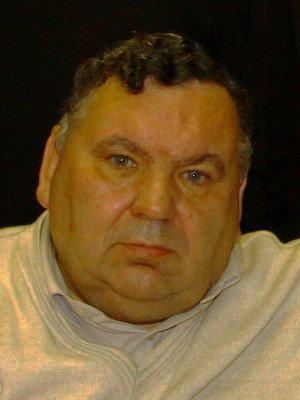
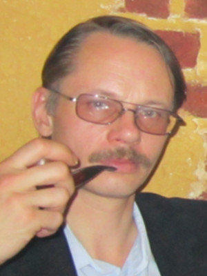
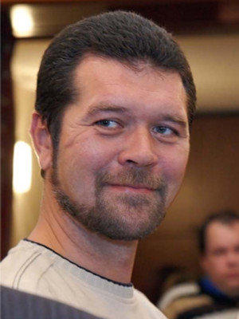
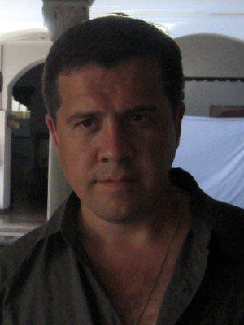
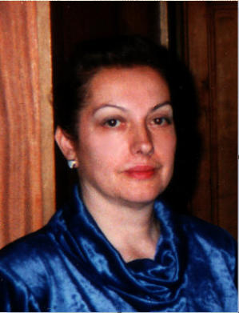
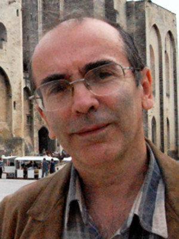
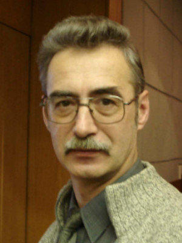
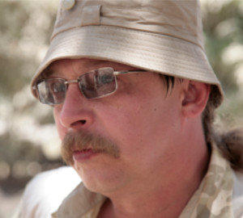

Контакты РОИПА
Связаться с РОИПА можно по адресам электронной почты:
А также напрямую с Президентом через его страницу в интернете:
По почте:
Москва, 119501
ул. Веерная д.3, к.3, кв.9
Лица проекта

Воронин Александр Александрович (1954-2012)
Первый президент Русского Общества по изучению проблем Атлантиды (РОИПА), главный редактор альманахов «Атлантида: проблемы, поиски, гипотезы» и «Кронос», член Союза журналистов г. Москвы.
Получил юридическое образование. С начала 1990-х гг. активно сотрудничал с редакцией журнала «Чудеса и приключения».
Организатор образования Российского Общества по изучению проблем Атлантиды, инициатор проведения 3-х съездов российских атлантологов (2000, 2003, 2007 гг.).
Лауреат премии «Золотое перо Руси», на которой в 2010 г. Александру Александровичу был вручен орден «Трудовая доблесть России».

Нефедьев Георгий Владимирович, г.р. 1968
Президент Русского общества по изучению проблем Атлантиды (РОИПА), историк, филолог, философ, архивист, поэт.
Член Междисциплинарной исследовательской группы «Истоки цивилизаций», главный редактор альманаха «Кронос».
Выпускник философского факультета Московского государственного университета им. М.В. Ломоносова. Закончил аспирантуру Государственного университета гуманитарной культуры.
Автор многих статей по истории атлантологии, русского символизма и Серебряного века русской культуры. Участник множества международных конференций.

Жуков Андрей Вячеславович г.р. 1966
Кандидат исторических наук, историк, археолог.
Член Междисциплинарной исследовательской группы «Истоки цивилизаций» и РОИПА. Закончил исторический факультет МГУ и аспирантуру Института Археологии АН СССР.
Сфера научных интересов: вопросы происхождения первых цивилизаций; алгоритмы развития и исчезновения цивилизаций.
В 2004-2010 гг. участвовал в съемочно-исследовательских экспедициях в Египет, Мексику, Перу, Сирию и другие страны. Автор книг «Камни Ики» и «Запрещенная история».

Комогорцев Алексей Юрьевич г.р. 1973
Исследователь, писатель, директор Междисциплинарной исследовательской группы «Истоки цивилизаций», главный редактор альманаха «Волшебная Гора», вице-президент РОИПА.
Учился в Московском авиационном технологическом институте. С 1990 по 1992 годы участвовал в работе Комиссии по аномальным явлениям.
Сфера исследовательских интересов: факторы, определяющие формирование и развитие социума. Автор множества публикаций по философии и истории.

Елена Дорис
Президент Центра изучения культурно-исторического наследия "КОЛХИДСКАЯ РОЗА" (Colhetis Vardi).
Вице-президент Русского общества по изучению проблем Атлантиды (РОИПА).

Непомнящий Николай Николаевич г.р. 1955
Историк, журналист, писатель, путешественник, главный редактор журнала «Путешествие по свету».
Член Междисциплинарной исследовательской группы «Истоки цивилизаций» и РОИПА. Закончил Институт стран Азии и Африки при МГУ.
Работал переводчиком португальского языка, в газете «За рубежом» и журнале «Вокруг света». Автор более 60 книг о путешествиях и загадках истории. Член Союза писателей РФ.

Петухов Александр Борисович г.р. 1955
Уфолог, исследователь. Член Междисциплинарной исследовательской группы «Истоки цивилизаций» и РОИПА.
Окончил Московский вечерний Металлургический институт и университет Марксизма-ленинизма. Проблемами АЯ и НЛО занялся с 1975 года.
С 2001 года работает в Общероссийской научно-исследовательской общественной организации «Космопоиск». В 2001 году разработал программу и создал школу «Сталкер» для подготовки юных исследователей. Автор более 330 публикаций по вопросам аномальных явлений.

Скляров Андрей Юрьевич (1961-2016)
Исследователь, путешественник, писатель, организатор съемочно-исследовательских экспедиций в разные регионы планеты.
Автор и главный координатор интернет-проекта «Лаборатория Альтернативной Истории», директор-распорядитель Фонда развития науки «III тысячелетие». Член РОИПА.
Закончил факультет аэрофизики и космических исследований Московского физико-технического института. Создатель цикла научно-популярных документальных фильмов «Запретные темы истории».
Автор ряда книг, выпущенных издательством «Вече»: «Перу и Боливия. Задолго до Инков», «Древняя Мексика без кривых зеркал», «Цивилизация Богов Древнего Египта». Обладатель международной премии «Золотое перо Руси» и звания «Лучший автор нового тысячелетия».